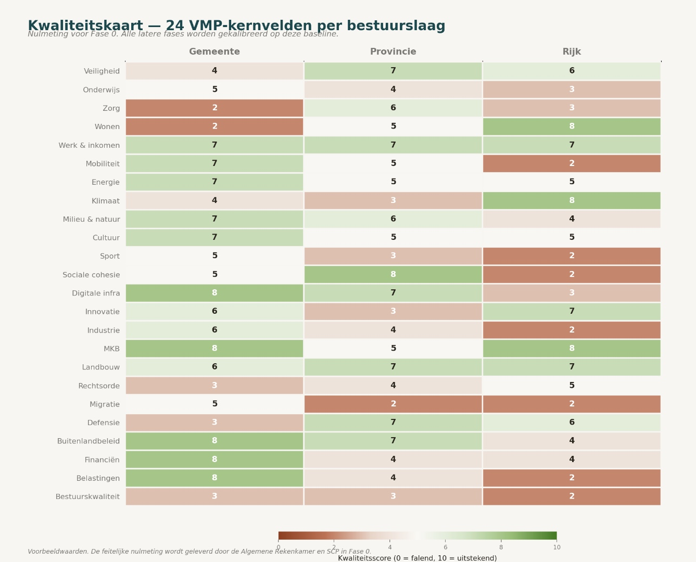

Un ingénieur qui rénove un pont ne fait pas simplement disparaître les piliers. Il mesure d'abord la structure, place des soutiens temporaires, remplace les éléments dans un ordre calculé, et vérifie après chaque étape si la marge reste acceptable. Le même principe s'applique à la démocratie néerlandaise. Qui veut réviser le système sans qu'il s'effondre pendant les travaux doit travailler dans l'ordre — pas dans la révolution.
Ce document décrit cet ordre en six phases. Les phases zéro à quatre se déroulent séquentiellement ; la phase cinq, l'éducation, démarre immédiatement et se poursuit en parallèle pendant dix ans ou plus. Pour chaque phase suivent l'objectif, les mesures concrètes, et l'élaboration — ce que le citoyen remarque et ce que le système fait. Le raisonnement est physique, pas idéologique.
Chronologie 2026 à 2036
Le phasage concerne trois niveaux de gouvernance à la fois — État, province, commune — chacun avec sa propre mesure et son propre rythme. La carte de qualité ci-dessous montre où se situe chaque niveau sur les six phases, et où se trouvent les lacunes que ce plan d'action comble.

Phase zéro — constitution et mesure de référence (année zéro)
Objectif : poser les fondations politiques et juridiques sans mettre quoi que ce soit en œuvre. Création d'un mouvement politique pour Nova Democratia. Projet de révision constitutionnelle sur quatre points : clauses d'extinction, séparation des pouvoirs deux point zéro, abolition de la norme Balkenende, article trente-deux sur le financement des médias. Fixation des vingt-quatre domaines clés du VMP avec les définitions de mesure correspondantes par niveau de gouvernance. Mesure de référence par commune, province et État — sans note d'évaluation, le seuil de vingt pour cent de la phase trois ne pourra pas être introduit plus tard.
Élaboration. Aucun citoyen ne remarque encore quoi que ce soit. Mais une base de référence mesurable est posée. Sans cette phase, chaque étape ultérieure est arbitraire — comparable à un entrepreneur qui commence à démolir sans plan de construction.
Phase un — transparence et couche de mesure (année un à deux)
Tableau de bord de performance public en direct sur les trois niveaux de gouvernance. Chaque service public reçoit un indicateur de coût par unité de résultat. Les organes de contrôle indépendants reçoivent mandat pour des contrôles inopinés avec escalade des sanctions : avertissement, interdiction pluriannuelle, exclusion permanente. Article trente-deux en vigueur : la radiodiffusion publique est limitée à une information qui n'attise pas les tensions ; le débat politique se déplace vers des chaînes financées par le privé. Cela se produit tôt, car le reste de la transition exige un paysage médiatique indépendant.
Élaboration. Les citoyens voient pour la première fois, par domaine clé, si leur commune performe bien ou mal. Cela crée une demande venue du terrain pour la phase suivante — mesurer suscite le jugement.
Phase deux — couche du personnel et de la rémunération (année deux à trois)
Abolition de la norme Balkenende pour le personnel politique, simultanément à l'introduction du modèle de financement : l'appareil administratif est entièrement payé par les caisses de l'État, avec un montant de base uniforme par habitant et par niveau de gouvernance. L'indemnité d'attente pour les niveaux supérieurs de gouvernance au service de l'État est réduite de quatre-vingts pour cent à zéro en trois ans. Rémunération liée à la performance sur la base des indicateurs de la phase un. Jusqu'à ce qu'il existe au moins une année complète de mesure, pas de rémunération variable — sinon le système récompense le bruit. Le leadership unipersonnel via des groupes de délibération citoyenne est d'abord introduit au niveau communal, avec des limites de mandat clairement définies.
Élaboration. Une administration plus efficace car la qualité supérieure peut être attirée, l'indemnité d'attente n'alimente plus les carrousels d'emplois, et un responsable final par dossier rompt le pouvoir diffus de l'administration.
Phase trois — couche de délibération et de vote (année trois à quatre)
La délibération citoyenne par tirage au sort devient structurelle : par domaine clé, les citoyens délibèrent, informés par des experts. Reformulation à base zéro des objectifs quinquennaux par domaine clé, ajustée chaque année sur des données actuelles. Le double vote — vote de politique plus vote de performance — est d'abord testé localement dans deux à trois communes pilotes, puis au niveau provincial, puis national. Les deux votes sont contraignants. Mandat et désélection : en cas de réalisation des objectifs inférieure à vingt pour cent, une désélection des dirigeants s'ensuit. À n'activer que lorsque les domaines clés ont reçu leur note d'évaluation — sinon le seuil est dénué de sens.
Élaboration. La politique est jugée sur les résultats plutôt que sur les promesses ; les changements de coalition ne perturbent plus la politique car celle-ci ne dépend plus d'une coalition.
Phase quatre — couche législative avec système d'extinction (année quatre à six)
Les clauses d'extinction entrent en vigueur progressivement : lois ordinaires cinq ans, lois importantes dix ans, dispositions constitutionnelles vingt ans. Les lois existantes reçoivent un calendrier d'expiration échelonné afin que tout n'expire pas simultanément. Le renouvellement exige une évaluation par conseil citoyen. Les lois qui n'obtiennent pas d'évaluation expirent automatiquement. Exception importante : les lois de mise en œuvre de l'UE sont exemptées d'expiration automatique ; seule l'obligation d'évaluation s'applique. Les dispositions constitutionnelles relatives aux droits humains connaissent une prolongation par défaut plutôt qu'une expiration par défaut.
Élaboration. Le système se nettoie lui-même. La législation morte ou contre-productive disparaît sans qu'un courage politique ultérieur soit nécessaire.
Phase cinq — fondation éducative (parallèle, année un à dix et plus)
L'éducation est délibérément longue et parallèle. La prévention de la criminalité par l'éducation ne fonctionne qu'à un très jeune âge, et la réforme du financement n'a d'effet qu'après une génération scolaire entière. Sous-phase a, année un à deux : les examens finaux centralement réglementés deviennent l'instrument de mesure. Le financement bascule du nombre de diplômés vers les résultats moyens aux examens. Sous-phase b, année deux à quatre : examens d'admission plus stricts, retour à une sélection fondée sur des créateurs motivés. Sous-phase c, année trois à dix : le centre de gravité se déplace vers le très jeune âge pour la formation du caractère. Sous-phase d, année cinq et plus : l'enseignement supérieur s'aligne sur les vingt-quatre domaines clés du VMP.
Élaboration. Ce n'est qu'à cette phase qu'émerge le type de citoyen et de fonctionnaire capable de porter une démocratie de la performance. C'est pourquoi l'éducation ne doit pas se situer à la fin — elle doit démarrer dès l'année un.
La démocratie actuelle ne peut pas supporter une révolution. Elle peut supporter une transformation calculée, dans cet ordre.
Ce que ce document n'est pas
Pas un plan directeur. Pas une loi. Pas un programme de parti. C'est un calcul de construction pour l'État néerlandais — mesurable, phasable, et recalibrable. Chaque phase tire sa légitimité de la mesure de la précédente. Qui rejette le raisonnement peut le faire. Mais sans ordre, sans mesure, et sans classification par ordre des objections, chaque réforme est à un moment donné reprise par le poids de freinage existant. Ce n'est pas une prédiction, c'est une constatation d'ingénieur fondée sur l'analyse Pareto du prochain épisode.
Open Vizier · novademocratia.com · Matériel de travail · Jacobus van Merksteijn · Juin 2026